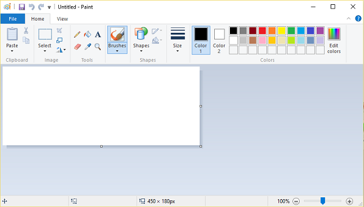

Графічний редактор Paint
Microsoft Paint – растровий графічний редактор, який входить до складу всіх операційних систем Windows.
Програму використовують як просту стандартну систему малювання. З її допомогою можна створювати картинки з підписом, мінімально редагувати фотографії, робити підписи, створювати комікси, листівки, інфографіку, меми та малюнки. Як правило, на прикладі цієї програми викладачі вважають за краще починати знайомство учнів із графічними редакторами.
Інтерфейс
Під час запуску програми Paint з'являється порожнє вікно, у верхній частині якого на стрічці розташована панель інструментів для креслення та малювання.
Стрічка програми Paint містить зручний набір інструментів малювання, введення тексту, виділення, перетворення розміру, орієнтації та положення зображення або його фрагментів. Інструменти малювання призначені для малювання від руки та створення різних фігур.
Набір інструментів
Набір інструментів програми пропонує використання пензлів різного типу. Передбачені звичайна та згладжена кисть, каліграфічна з нахилом 45 градусів ліворуч і праворуч, масляна для товстих штрихів та пастельна, що малює за принципом кольорового крейди. У начерках можна використовувати маркер для фарбування кольором, текстурний олівець, напівпрозору акварель та балончик. Бібліотека фігур містить як стандартні еліпси, прямокутники, вектори, ромби та багатогранники, так і 17 нових інструментів, таких як рівнобедрений трикутник, стрілки в різні боки, зірки, "бульбашки" для коміксів, п'яти- і шестикутники. Передбачено 6 варіантів заливки контуру, включаючи пастель, олію, олівець, акварель, маркер, один тон та повну його відсутність. Запропоновані інструменти можна зменшувати та збільшувати, підбирати кольори за допомогою "
Недоліки
- Відсутня функція зміни яскравості(насиченості), контрасту і т. д.
- Немає можливості при зміні розміру вказати бажаний розмір у пікселях (функція з'явилась в Windows 7).
- Неможливо вирівняти шрифт за правим краєм, чи по центру.
- Неможливо зрушувати кордони області виділення (при цьому змінюються пропорції виділеного фрагменту).
- Неможливо обертати фігури на певну градусну міру.
Висновки
Графічний редактор Microsoft Paint використовується для створення та обробки різноманітних візуальних об'єктів. Знання даної програми стане в нагоді в практичній роботі з цифровими зображеннями.
Paint простий у вивченні та застосуванні та буде надійною підмогою при оформленні наукових праць для друкованих та електронних видань, створенні ілюстрацій до навчальних посібників, лекційних матеріалів та ін.